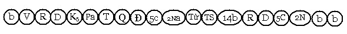
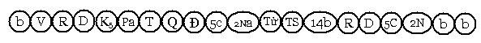
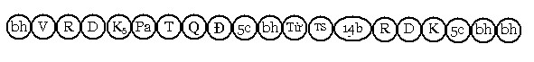
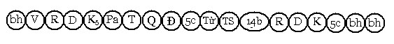
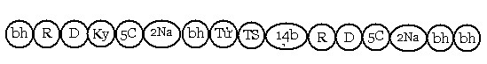
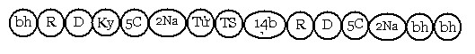
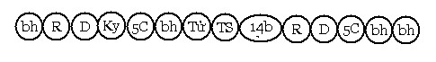
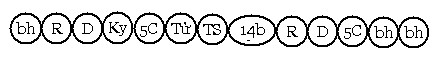

Bài 22 LỘ CẬN TỬ THÔNG THƯỜNG I. ĐỊNH NGHĨA. Lộ cận tử thông thường là lộ tâm khởi lên cho người sắp mệnh chung còn Tục sinh, theo cách thức phổ biến cho mọi chúng sanh. II. PHÂN TÍCH. Tâm lộ cận tử thông thường có hai phương thức: - Lộ cận tử khởi lên qua năm môn, gọi là lộ ngũ môn cận tử. A- LỘ NGŨ MÔN CẬN TỬ (Pañcadvāramaraṇāsannavīthi) 1. Mô thức. Khi năm cảnh xuyên qua ngũ môn đối với người sắp mệnh chung, làm khởi sanh cảnh Nghiệp tướng, tạo điều kiện cho tâm Tục sinh sanh lên, khởi đầu một kiếp sống mới, lộ tâm khởi lên trong điều kiện như thế gọi là lộ ngũ môn cận tử. Lộ ngũ môn cận tử có bốn trường hợp: - Đổng lực, Na cảnh, hữu phần và Tử tâm (cuticitta). Mỗi môn có bốn trường hợp, như vậy có tất cả là 20 tâm lộ cận tử (4 lộ x 5 môn). 2. Biểu đồ. a- Đổng lực, Na cảnh, hữu phần và tử tâm  b- Đổng lực, Na cảnh và Tử tâm  Ký hiệu: Pa: Pañcaviññāṇa (năm thức). Hai tâm lộ này có được: - Sát-na: 12 sát-na tâm khách. c- Đổng lực, hữu phần và Tử tâm.  d- Đổng lực và Tử tâm.  Hai lộ này có được: - Sát-na: 10 sát-na tâm khách. 3- Biện giải. Hai lộ cận tử không có sát-na Na cảnh có được 37 tâm khách là lấy 54 tâm Dục giới trừ đi 9 đổng lực Hạnh Dục giới, trừ thêm 8 đại quả. Bậc Thánh Tam Quả do diệt trừ được tham dục, đồng thời khi sắp lâm chung các Ngài hướng về các pháp đã chứng đắc như thiền hoặc quả Siêu thế, nên năm trần cảnh không thể xâm nhập vào dòng ý thức của các Ngài, khi mệnh chung các Ngài sẽ sanh về cõi Thiền đã chứng đạt hay sanh về cõi Tịnh cư (suddhāvāsa), hoặc sanh về cõi Sơ thiền (bậc Tam quả lạc quán). Vị Thánh Tứ quả khi sắp lâm chung, Ngài hướng về sự Viên tịch (parinibbāna) và điều này cũng chỉ khởi lên trong ý môn chứ không thể qua năm môn được. Nên tâm lộ ngũ môn cận tử không có đối với hai bậc Thánh trên. Đối với phàm nhân, Thánh Sơ Quả, Thánh Nhị Quả vì chưa sát tuyệt được tham dục, do đó các trần cảnh còn chi phối tâm các Ngài và chúng có thể hiện khởi qua năm môn trong thời cận tử . Vị Thánh Tam quả Lạc quán, tuy không chứng đạt thiền Chỉ Tịnh, nhưng khi sắp xuất hiện tâm Tử thì tâm Maggasiddhijhāna (tâm thiền sanh từ Đạo) sanh lên cho vị ấy (tâm này chỉ có riêng cho vị Tam quả Lạc quán vào thời điểm cận tử, tâm này phát sanh lên do năng lực sát tuyệt tham dục của Đạo thứ ba), rồi Tử tâm xuất hiện vị ấy tái sanh về cõi Sơ thiền (pathamajhānabhūmi). B- LỘ Ý MÔN CẬN TỬ (Manodvāramaraṇāsannavīthi). 1. Mô thức. Tương tự như lộ ngũ môn cận tử, lộ ý môn cận tử cũng có 4 trường hợp: - Đổng lực, Na cảnh, hữu phần và Tử tâm. Như vậy có 4 lộ ý môn cận tử căn bản. 2. Biểu đồ. a) Đổng lực, Na cảnh, hữu phần và Tử tâm.  b) Đổng lực, Na cảnh và Tử tâm.  Hai lộ này có được: - Sát-na: 8 sát-na tâm khách (sát-na Hướng ý môn, 5 sát-na đổng lực,
2 sát-na Na cảnh) c) Đổng lực, hữu phần và Tử tâm.  d) Đổng lực và Tử tâm.  Hai lộ này có được: - Sát-na: 6 sát-na tâm khách (sát-na Hướng ý môn, 5 sát-na đổng lực). 3. Biện giải. Trong lộ cận tử ngũ môn và lộ cận tử ý môn, đúng ra cũng có sát-na hữu phần Khách, nhưng không cần thiết phải nêu ra. a) Vì sao có xen hữu phần rồi đến Tử tâm? Đời sống chúng sanh được duy trì bởi danh mạng quyền (jīvitindriyanāma) và sắc mạng quyền (jīvitindriyarūpa), hai loại mạng quyền này gọi chung là jīvitindriya . Khi tuổi thọ diệt thì hai loại mạng quyền cùng diệt, nói cách khác khi Sanh nghiệp diệt thì hai loại mạng quyền trên cùng diệt. Sắc mạng quyền là loại sắc do nghiệp tạo, sắc nghiệp (kammajarūpa) gồm có 9 đoàn: Đoàn nhãn, đoàn nhĩ, đoàn tỷ, đoàn thiệt, đoàn thân, đoàn ý vật, đoàn nam tính, đoàn nữ tính, đoàn mạng quyền, 8 đoàn kia (ngoại trừ đoàn mạng quyền) bị hoại, chúng sanh vẫn tồn tại, nhưng khi đoàn mạng quyền diệt thì chúng sanh ấy chết. Theo quy luật, khi tâm Tử diệt bấy giờ sắc mạng quyền cũng phải diệt. Đời sống sắc mạng quyền dài hơn đời sống tâm pháp 17 lần, do đó khi Sanh nghiệp bắt đầu muội lược, không còn khả năng trợ sanh cho sắc mạng quyền, sắc mạng quyền cứ mỗi sát-na tiểu diệt đi một đoàn mà không sanh, cho đến khi Tử tâm xuất hiện, chúng chỉ còn ba đòan và diệt đồng thời với tâm Tử. Như vậy, kể từ tâm Tử trở về trước 17 sát-na (kể luôn tâm Tử) thì sắc mạng quyền phải diệt mà không sanh. Khi sát-na đổng lực thứ năm (hay sát-na Na cảnh thứ hai) diệt mà sắc mạng quyền còn đến 6 bọn, bấy giờ một hữu phần cơ bản sanh khởi giúp cho danh mạng quyền kéo dài tuổi thọ thêm 3 sát-na tiểu để cùng với sắc mạng quyền đồng diệt với tâm Tử. Vào sát-na đổng lực thứ 5 hay sát-na Na cảnh thứ 2, sắc mạng quyền chỉ còn ba bọn, thì sát-na hữu phần cơ bản không cần phải sanh lên. b) Tâm Tử là loại tâm nào? Tâm Tử chính là loại tâm hữu phần cơ bản, sanh lên lần cuối cùng rồi chấm dứt, nên gọi là tâm Tử. Có quan điểm sai lầm cho rằng: Chính Tử tâm này là tâm Tục sanh trong kiếp kế đó. Thật ra, Tử tâm chỉ là loại hữu phần cơ bản xuất hiện vào thời điểm cuối cùng của kiếp sống cũ, còn tâm Tục sinh là tâm khởi đầu kiếp sống mới, chúng chẳng liên quan gì nhau cả. Điều rõ ràng nhất là: ba cảnh Chủ ở kiếp sống ấy với ba cảnh trong thời cận tử, thông thường chúng không giống nhau.Do đó, không thể bảo "tâm Tử ở kiếp này chính là tâm Tục sinh ở kiếp sau". Chính những sát-na đổng lực trong thời cận tử là yếu tố quyết định cho kiếp sống mới. Khi tâm Tử diệt sự chết mới thật sự xảy ra, khi ấy 3 loại sắc: sắc tâm (cittajarūpa), sắc vật thực (āhārajarūpa) và sắc nghiệp (kammajarūpa), chậm lắm là sau 17 sát-na tâm sẽ diệt hoàn tòan. Riêng sắc âm dương (utujarūpa) vẫn tiếp tục sanh diệt cho đến khi thân xác trở thành cát bụi. c) Đổng lực trong lộ cận tử. Giai đoạn đổng lực trong thời điểm này vô cùng quan trọng, tuy chúng yếu ớt chỉ có 5 sát-na . Chính vì yếu ớt nên chúng rất dễ chuyển đổi từ thiện sang bất thiện, hay từ bất thiện sang thiện như bà lão ở câu chuyện nêu phần trước. Tuy nhiên đây chỉ là những trường hợp đặc biệt ngoại lệ. Đổng lực trong lộ cận tử có tầm quan trọng, vì nhiệm vụ chủ yếu của chúng là tạo duyên cho kiếp sống mới (abhinavakaraṇa) qua Thường nghiệp được tạo trữ trong thời bình nhật. Chúng ta hãy lấy hình ảnh người Phật tử nhiệt tâm, thường tạo phước với tâm có trí không có sự trợ giúp đồng sanh với thọ hỷ (tâm thiện thọ hỷ hợp trí vô trợ) để minh họa. Khi sắp lâm chung một đối tượng tốt đẹp liên hệ với nghiệp tốt khởi lên qua 5 môn (cảnh nghiệp tướng) hay là một việc làm tốt đẹp thường ngày khởi lên qua ý môn (cảnh nghiệp), bấy giờ luồng đổng lực sanh khởi là tâm thiện thọ hỷ hợp trí vô trợ khởi lên một cách tự nhiên vì khi ấy triều tâm yếu ớt, nó không có khả năng chọn lựa, suy xét như trong thời bình nhật. Vua Duṭṭhagāmini xứ Tích Lan, thường đặt bát cho chư Tăng trước khi dùng bữa, chính loại Thường nghiệp này trổ sanh lúc vua sắp băng hà, giúp Đức vua tái sanh về cỏi Đâu suất (Tusita). Còn loại ác thường nghiệp được tạo bằng đổng lực bất thiện, vào lúc cận tử đổng lực bất thiện này cũng khởi lên một cách máy móc, để đưa chúng sanh ấy rơi xuống khổ cảnh. Sự "trỗi dậy" của loại Thường nghiệp, tạo điều kiện cho sanh thú tốt hay xấu trong thời cận tử, nên luồng đổng lực trong lộ cận tử vô cùng quan trọng. Nên ghi nhận rằng: Lộ cận tử này chẳng phải là một lộ, mà trải qua hàng trăm hàng ngàn lộ, lộ cận tử cuối cùng xuất hiện Tử tâm quyết định đến cảnh giới tái sanh của chúng sanh ấy. d) Cận tử nghiệp là loại nghiệp nào? Trước tiên nên hiểu khái lược về Nghiệp . Chữ Kamma của Pāli hay chữ Karma của Phạn ngữ là "hành động hay việc làm". Nói chính xác hơn, nghiệp là "ý muốn làm". Theo Abhidhamma, có 29 tâm tạo nghiệp cho quả khác thời gian (vipāka) đó là 12 tâm bất thiện, 8 tâm thiện dục giới và 9 tâm thiền thiện. Các vị Thánh Vô lậu như Đức Phật, Phật Độc giác hay vị A La Hán không còn tạo nghiệp để có hậu quả (vipāka), loại nghiệp mà các Ngài làm là nghiệp đồng sanh (sahagatakamma), tức là khi việc làm chấm dứt thì quả cũng chấm dứt, không lưu lại chủng tử cho quả về sau. Chỉ có bậc Thánh Hữu học và phàm nhân bị chi phối bởi nghiệp khác thời kỳ (kammavipāka). Những tâm Siêu thế như tâm Đạo không được xem là kammavipāka, bởi vì loại tâm này có khuynh hướng tận diệt nghiệp. Trong tâm Siêu thế, trí tuệ (paññā) là chủ yếu trái lại trong những tâm bất thiện hay thiện hợp thế thì cetanā (Tư tâm sở) là yếu tố chánh. Nghiệp được phân tích theo ba khía cạnh: Sức mạnh, phận sự và thời gian. * Nghiệp theo sức mạnh. Tùy theo sự cố ý (cetanā) trong tâm thiện hay tâm bất thiện mà sức mạnh của nghiệp mạnh yếu khác nhau. Có 4 loại nghiệp phân theo sức mạnh: - Trọng nghiệp (garukakamma) Là loại nghiệp nặng nhất, dù thiện hay bất thiện chắc chắn sẽ trổ sanh quả trong hiện tại hoặc ngay trong kiếp kế . Trọng nghiệp này, nếu là thiện thời thuộc về ý nghiệp như các tâm Thiền (jhānacitta), nếu là bất thiện thì đó là năm tội đại nghịch: giết cha, giết mẹ, giết vị A La Hán, phá hòa hợp Tăng và làm thân Phật chảy máu. Phạm vào 1 trong 5 điều trên là phạm vào Vô gián nghiệp (ānantarakamma), nhất định phải rơi vào địa ngục, như trong Nhị Đề Kinh có ghi " Tất cả pháp tà cho quả nhất định" là nói đến 5 ác trọng nghiệp này. Một hành giả chứng đắc Thiền định, nhưng về sau tạo một nghiệp Vô gián. thiền định ấy bị hoại ngay, đồng thời y phải nhận lấy quả rơi vào địa ngục. Như Đề bà đạt đa (Devadatta) chứng đạt 5 Thông phàm, chỉ vì có ý nghĩ "Ta hãy là người lãnh đạo tăng chúng", năm thần thông bị hoại tiêu, về sau lại phạm Vô gián nghiệp, mệnh chung rơi vào địa ngục Vô gián. Đức vua Ajātasattu (A Xà Thế) phạm vào tội giết cha, nên không thể chứng Sơ quả, mệnh chung rơi vào địa ngục Đồng sôi. Có câu hỏi rằng: Một người không biết đó là cha, mẹ hay vị A La Hán, giết chết những vị ấy có phạm Vô gián nghiệp không? Vẫn phạm vào Vô Gián nghiệp, vì sao? Vì đó là những đối tượng bất khả xâm phạm, ví như chất độc cực mạnh, dù biết đó là chất độc hay không biết, uống vào vẫn chết như nhau. Trong Samantapasādikā (Sớ giải về luật) có giải rằng: Một người đặt bẫy thú, chẳng may cha mẹ y rơi vào bẩy ấy chết, y phạm vào Vô gián nghiệp. - Cận Tử nghiệp (āsannakamma). Là nghiệp được tạo thành khi sắp mệnh chung. Vì nghiệp này rất quan trọng nên nhiều nghi thức được tổ chức giúp người sắp chết có được hay nhớ lại các nghiệp lành để tái sanh vào nhàn cảnh (sugati). - Thường nghiệp (āciṇṇakamma). Còn gọi là Tập quán nghiệp, đây là nghiệp thường làm và thường nhớ đến khi sắp lâm chung. Chính những hành động thường làm ấy trở thành một tập quán, tác thành cá tánh riêng cho mỗi chúng sanh. Điều này đã giải thích vì sao trong một gia đình đạo đức lại có người con hư hỏng, trái lại trong một gia tộc suy đồi lại có người lương thiện. - Tích lũy nghiệp (kaṭattākamma). Còn gọi là nghiệp Vô ý, tức là những loại nghiệp tạo ra trong lúc vô tình, hay những nghiệp nhỏ nhoi chút ít. Loại nghiệp nhỏ nhoi này tích lũy lâu ngày cũng trở thành nhiều và có kết quả lớn. Đức Phật dạy trong Pháp cú Kinh rằng: Pāpañ ce puriso kayirā "Nếu người kia làm điều ác, người ấy không nên lập đi lập lại, không nên thỏa thích trong việc ác, tích ác tức thọ khổ." (PC 117) Puññaṃ ce puriso kayirā. "Nếu người tạo phước báu, phải lập đi lập lại, phải thỏa thích trong điều thiện ấy, tích trữ nghiệp lành là hạnh phúc" (PC 118) Như vậy, loại cận tử nghiệp là: Khi tạo ra 1 trọng nghiệp thì vào lúc sắp lâm chung loại nghiệp này trở thành cảnh nghiệp cho chúng sanh ấy (hành giả đắc thiền mà không hoại thiền thì cảnh nghiệp này sanh khởi, nếu hoại thiền thì xem như trọng nghiệp này không trổ quả). Nếu không có loại trọng nghiệp thì khi ấy Tập Quán nghiệp sẽ tạo thành cảnh nghiệp hoặc cảnh nghiệp tướng trong thời cận tử . Nếu cả hai không có, bấy giờ nghiệp Tích lũy nghiệp sẽ đảm nhận vậy. * Nghiệp trả quả theo phận sự. - Sanh nghiệp (janakakamma) Khi tâm Tử vừa diệt, một thức Tục sinh sanh khởi, tạo một đời sống mới, tâm này là 1 loại tâm quả có từ tâm thiện hay tâm bất thiện, nghiệp tạo thành tâm Tục sinh ấy có tên gọi là Sanh nghiệp hay gọi là nghiệp Tái Tục. Theo bản Sớ giải, nghiệp Tái tục là nghiệp tạo nên danh uẩn và sắc uẩn mới, khởi đầu một kiếp sống khác. Ở cõi người, có ba đoàn sắc đồng sanh với thức Tục sinh sanh, gọi là sắc Tục sinh, đó là đoàn thân (kāyadasaka), đoàn tính (nam hay nữ) (bhāvadasaka) và đoàn ý vật (vatthudasaka). Nếu ở cõi trời Dục giới hay 1 số chúng sanh đọa xứ (ngạ quỷ, A Tu La), đồng thời với thức Tục sinh thì các bọn sắc nghiệp đều sanh khởi (vì đây là những chúng sanh hóa sanh). Ở cõi Phạm Thiên giới, đồng sanh với thức Tục sinh là 3 đoàn: Đoàn ý vật, đoàn nhãn và đoàn nhĩ. Sanh nghiệp có mặt cả thời tục sinh lẫn thời bình nhật, nhưng quan trọng nhất là vào thời tục sinh. Công tử Soreyya phạm lỗi với Ngài Mahā Kaccāyana, từ nam nhân chuyển thành nữ nhân, sau đó Công tử sám hối Trưởng lão thì thân nữ nhân lại trở thành nam nhân. Đây là Sanh nghiệp thời bình nhật. - Trì nghiệp (upatthambhakakamma), Còn gọi là nghiệp nuôi dưỡng, là loại nghiệp nối tiếp theo Sanh nghiệp, có phận sự cấp dưỡng, gìn giữ Sanh nghiệp cho đến khi mệnh chung. Nếu Sanh nghiệp là thiện thì Trì nghiệp cũng là thiện, Trì nghiệp này làm cho Sanh nghiệp càng tốt đẹp thêm, trái lại nếu Sanh nghiệp là bất thiện thì Trì nghiệp cũng là bất thiện, sẽ làm cho Sanh nghiệp đã xấu càng xấu hơn. - Chướng nghiệp (upapīladakakamma) Nghiệp này trái lại với Trì nghiệp, nó có khuynh hướng làm giảm năng lực của Sanh nghiệp. Một người sanh ra với Sanh nghiệp tốt, Chướng nghiệp xen vào, làm giảm sự tốt của Sanh nghiệp, khiến người ấy có thể bị đau đớn, bệnh hoạn. Hoặc một người sanh ra bởi Sanh nghiệp xấu, Chướng nghiệp xen vào khiến cho sự xấu ấy giảm thiểu. Tóm lại, Chướng nghiệp là một loại nghiệp nghịch với loại nghiệp đang có, nó chen vào để trả quả, nếu nghiệp đang có là thiện thì Chướng nghiệp là bất thiện và ngược lại. Điều này đã giải thích vì sao 1 người đang sung mãn tài sản, dần dần bị lụn bại và ngược lại . - Đoạn nghiệp (upaghātakakamma). Là nghiệp cắt đứt Sanh nghiệp. Theo Định luật nghiệp báo, tiềm năng của Sanh nghiệp có thể bị tiêu diệt bởi một năng lực mạnh hơn. Nghiệp này có năng lực mạnh hơn Chướng nghiệp, chẳng những chống lại mà còn cắt đứt cả Sanh nghiệp. Trường hợp Đề Bà Đạt Đa (Devadatta) là một minh chứng cho cả bốn loại nghiệp trên. Nhờ thiện Sanh nghiệp nên ông tái sanh vào dòng Hoàng tộc Thích Ca (sakya), Trì nghiệp là thiện nên ông sống đời sống Vương giả an lạc nơi cung điện, Chướng nghiệp xuất hiện là bất thiện nên khiến ông chịu bị nhục nhã, bị trục xuất ra khỏi Tăng đoàn. Và Đoạn nghiệp chấm dứt kiếp sống của ông một cách bi thảm. * Nghiệp trả quả theo thứ tự. - Hiện nghiệp. Là loại nghiệp cho quả ngay trong kiếp sống hiện tại. Theo Abhidhamma chính luồng đổng lực là tác năng quyết định trong việc nghiệp trả quả theo thứ tự thời gian. Trong luồng đổng lực có 7 sát-na, thì sát-na đầu tiên tuy yếu nhất nhưng lại cho quả trong hiện tại. Các Giáo thọ sư đã cho 1 ví dụ như sau: Trong một chuồng bò có những con bò mạnh, yếu khác nhau. Một con bò tuy yếu nhất nhưng lại đứng gần cửa chuồng, khi cửa chuồng mở thì nó xông ra trước tiên. Cũng vậy, tuy sát-na đổng lực thứ nhất yếu nhất nhưng là sát-na đầu tiên trong luồng đổng lực nên khi có duyên hội tụ để trổ quả thì nó cho quả trước tiên ngay trong hiện kiếp ấy. Hiện nghiệp được hiện khởi có hai loại: Từ 1 trong 7 ngày, tức là khi tạo nghiệp thì trong vòng 7 ngày sẽ trổ quả, như trường hợp nông dân Puṇṇa, bà Hoàng Mallikā, Bà la môn Cūlekasātaka, đây là những quả thiện. Còn quả ác xấu như thanh niên Nanda, nàng Ciñcā, Dạ xoa Nanda ... Các Ngài bảo rằng: Đối với quả thiện được trổ sanh trong vòng 7 ngày, đó là do tâm thiện cao thượng có 3 nhân thù thắng (tihetukamukkaṭṭha citta). Đó là tâm thiện có trí đầy đủ ba Tư (cetanā) Chữ Ukkaṭṭha là do U + với ngữ căn KAS, U là ở trên, ngữ căn KAS là kéo lên. Đối tượng tạo phước là bậc đáng cúng dường, vật cúng dường phát sanh đúng pháp. Một nghiệp thiện đầy đủ 3 pháp này, gọi là nghiệp cao thượng sẽ cho quả trong vòng 7 ngày, như bà Mallikā cúng dường bánh đậu đến Đức Phật, chiều hôm ấy được làm Hoàng Hậu của vua Pasenadi (Ba Tư Nậc). Còn ác nghiệp trổ quả trong vòng 7 ngày vì có ác tâm quá mạnh đối với bậc Thánh Vô Lậu có ân đức lớn. Hiện nghiệp trổ quả từ ngày thứ 8 trở đi là do thiện nghiệp được tạo bởi tâm thiện có ba nhân kém hơn (tihetukamomakacitta). Trường hợp kém hơn này có hai loại: - Tuy tâm thiện có 3 nhân thiện, nhưng lại thiếu một trong ba Tư, hoặc đối tượng không trong sạch, hoặc vật cúng dường không phát sanh đúng pháp. - Là tâm thiện Nhị nhân thù thắng. Nếu trong hiện kiếp, Hiện nghiệp không trổ quả thì sẽ trở thành Vô hiệu nghiệp (ahosikamma). - Sanh báo nghiệp (upapajjavedanīya kamma). Chập sát-na yếu ớt thứ 2 là sát-na đổng lực thứ 7, sẽ cho quả ở kiếp kế tiếp. Nếu trong đời sau kế đó không trổ quả được thì sẽ trở thành Vô hiệu nghiệp (ahosikamma). - Hậu báo nghiệp (aparāpariya vedanīya kamma). Năm sát-na đổng lực ở giữa sẽ cho quả bất kỳ lúc nào cho đến khi chứng đạt Vô dư Níp-Bàn. Không một ai, ngay cả Đức Chánh Đẳng Giác, khi còn Hữu dư Níp-Bàn cũng không tránh khỏi loại nghiệp này. - Vô hiệu nghiệp (ahosikamma). Không có một loại nghiệp nào nhất định cho nghiệp này, gọi là Vô hiệu vì khi đến thời trổ quả mà không trổ quả được thì trở thành vô hiệu. Hoặc đã trả quả xong rồi, không còn cho quả nữa. e) Vì sao lộ ý cận tử không có HPVQ? Thông thường, trong lộ ý cận tử cảnh nghiệp, cảnh nghiệp tướng và cảnh thú tướng thuộc về danh pháp. Sắc thành tựu hiện tại không có cơ hội làm cảnh trong lộ ý cận tử, chỉ có sắc ý vật có thể làm cảnh được mà thôi (Vật cảnh tiền sanh y duyên-Vatthārammaṇapurejātanissaya paccaya) nhưng trường hợp này không phổ thông, là trường hợp cá biệt ngoại lệ và khi ấy sẽ có HPVQ trong tâm lộ cận tử. -ooOoo- Ðầu trang | Mục lục | 01 | 02 | 03 | 04 | 05 | 06 | 07 | 08 | 09 | 10 | 11 | 12 | 13 | 14 | 15 | 16 | 17 | 18 | 19 | 20 | 21 | 22 | 23 | 24 | 25 |